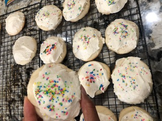
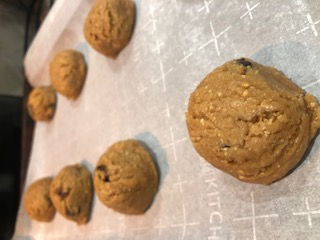
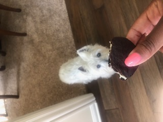
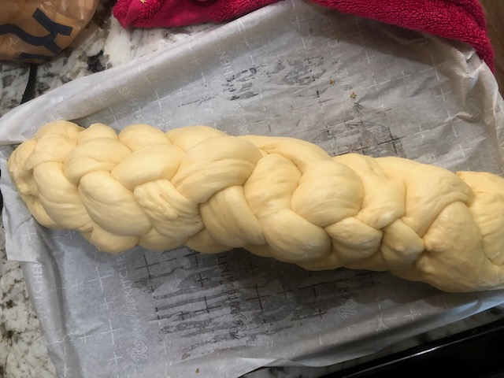
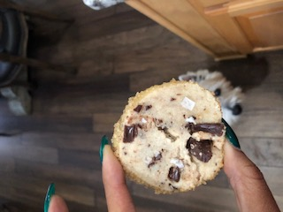
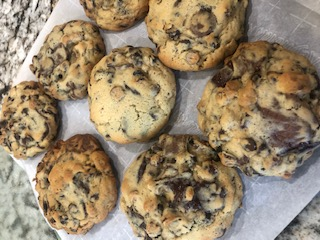

Baking Projects
One of my favorite past times is checking out the recommendations of those I trust! Books, restaurants, snacks, you name it! So think of this page as my way of doing that for you. You’ll find below some things I think are cool
Stella Parks
During quarantine, like many others, I found myself baking a ton! I became obsessed with Stella Parks’ recipes, and rightly so. She has an amazing book that tackles American treats and desserts, but in a way that a home cook can easily manage. Below you can find a link to her website.
Lofthouse cookies

Cosmic brownies

Marshmallows

PBJ cookies

Oreos

The Jewish Baker
Love bagels? Ever felt like making your own pita or challah? You’re in luck! As long as you have some bread flour and some patience to proof you can do it! Check out the Shannon Sarna’s book, that teaches you some traditional baked goods.
Before Challah

After Challah

Bon Appetit
BA’s kitchen has received some major, and well deserved heat this summer when it broke that they had not being paying their staff. Nonetheless, they have some excellent recipes that are worth checking out.
Double chocolate cookies
Alison Roman
Alison Roman is another source of great recipes. Her laid back personality eas initially infectious but quickly soured when she found herself into some hot water. Nonetheless her 2 most recent books offer great finds.
Key lime pie

Shortbread chocolate chunk

Serious Eats
Serious eats is the lovechild between Stella Parks and J. Kenji Lopez-Alt. You can find great savory dishes and experimental baking from Stella Parks.
Levain Style chocolate chip cookies
